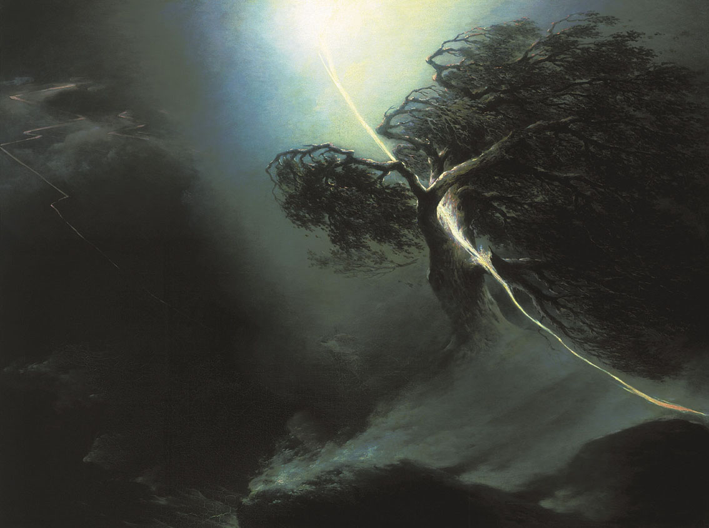
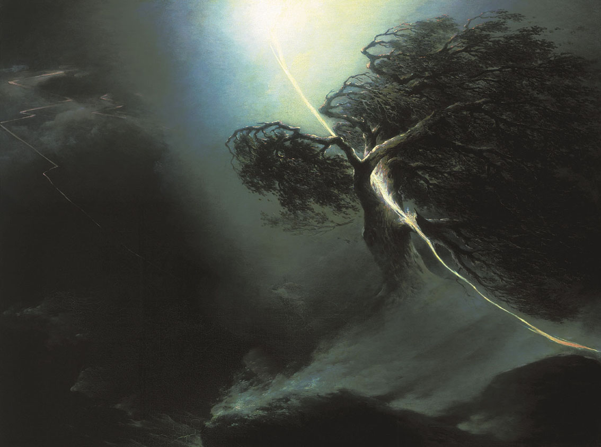

Maxim Vorobiev
- Nacimiento:
6 de agosto de 1787; Pskov, Russian Federation
- Fallecimiento:
30 de agosto de 1855; Saint Petersburg, Russian Federation
- Género:
Paisaje
- Campo:
Pintura
- Institución:
Indefinido
Este fue un artista Ruso con gran potencial y talento. Esto se vio reflejado cuando, con tan solo 10 años, empezó a estudiar clases elementales y siguió con pintura de paisaje y arquitectura. Su maestro fue Fyodor Alekseyev, que en 1809, viajó junto a su alumno a descubrir zonas de valor histórico de Rusia Central. En 1815 el artista acompañó al ejército ruso, para luego convertirse en profesor de la Academia de Artes, continuó en este rol el resto de su vida. Uno de sus trabajos más importantes fue, en 1820, realizó un viaje en nombre del Gran Duque Nikolai Pavlovich, para dibujar planos arquitectónicos para usarlos en proyectos cercanos a Moscú. Durante su viaje pintó varias láminas al pasar por Jerusalén, el Mar Muerto, Jaffa, Estambul, entre otros. Al final, murió en 1855 en San Petersburgo, pero su arte no termina acá. Su hijo adoptivo realizó la misma carrera que su padre, se convirtió en profesor de arte y pintor de paisajes.